Este guia explica, slide por slide, tudo o que aparece na
apresentação. Em cada capítulo você encontra:
O que aparece na tela: a descrição de cada elemento
e do que entra a cada clique.
Conceitos: os termos do slide, explicados do
zero.
De onde vêm os números: a fonte e, quando for o
caso, a conta.
Roteiro da fala: o que dizer, no tempo
previsto.
Perguntas prováveis: o que a banca pode perguntar e
como responder.
No TCC: onde o assunto está no documento que a
banca já leu.
No fim há um glossário, a lista de números para decorar, os pontos
delicados (com respostas honestas), um banco de perguntas extras e o
checklist do dia.
Sugestão de estudo. Leia uma vez inteiro. Depois
ensaie com o deck aberto, um capítulo por vez, falando em voz alta. Na
véspera, releia só os “Roteiros” e os “Pontos delicados”.
Teclas da apresentação
Tecla
O que faz
→ ou espaço
próximo clique ou próximo slide
←
volta
S
visão do apresentador: notas, cronômetro e próximo slide
F
tela cheia
T
alterna tema claro (padrão) e escuro
B ou .
tela preta
Esc
visão geral dos slides
clique numa imagem
abre a galeria ampliada (slides 3 e 14); ← → passam,
Esc fecha
A visão do apresentador (S) mostra se você está
adiantado ou atrasado em relação aos tempos planejados de cada slide.
Use-a nos ensaios.
A história em um minuto
A apresentação conta uma história em seis passos:
O mundo: o ciclismo virtual já é esporte de
verdade, de Copa Brasil a Mundial (slide 3).
O problema: o ciclista usa quatro aplicativos,
exporta arquivos à mão e não sabe como os números são calculados (slides
4 e 5).
A proposta: um único fluxo aberto, do GPX ao
histórico, servindo a reconhecimento, exploração e treino (slide
6).
Como foi feito: pelo método DSR, com uma
arquitetura em camadas, conversando com o rolo por Bluetooth e tratando
os dados em tempo real (slides 7 a 11).
A evidência: as métricas com fórmula aberta, dez
meses de uso real, as funcionalidades e os requisitos atendidos (slides
12 a 15).
A conclusão: funciona no desktop, cada número pode
ser conferido, e os limites estão declarados (slide 16).
A frase que amarra tudo: “o fluxo funciona, e cada número
pode ser conferido”.
Tabela de tempos
#
Slide
Tempo
1
Capa
0:20
2
Sumário
0:20
3
O que é ciclismo virtual
1:20
4
O fluxo do ciclista é fragmentado
1:00
5
As peças existem, mas não juntas
1:10
6
Um fluxo para três usos
0:50
7
Construir, usar e corrigir, em ciclos
1:00
8
Como o Argus foi construído
1:10
9
Núcleo em Go, interface web compartilhada
1:40
10
Como o Argus conversa com o rolo
1:30
11
Do sensor até o ciclista
1:15
12
Cada número tem fórmula e limite
1:50
13
Dez meses de uso real
1:00
14
Do treino à análise
1:00
15
Requisitos atendidos
0:50
16
Conclusão
1:15
17-18
Referências
0:10
19
Obrigado
0:15
Total
17:55
Sobram cerca de 2 min 05 s dos 20 minutos. Se
atrasar, corte nesta ordem:
Slide 9 (Archify): fale só “interface,
orquestrador, laço, Bluetooth, rolo” e siga. Economiza cerca de 1
min.
Slide 14 (galeria): uma frase. Economiza cerca de
40 s.
Slide 5 (estado da arte): aponte só a linha do
Argus. Economiza cerca de 30 s.
Slide 1 · Capa
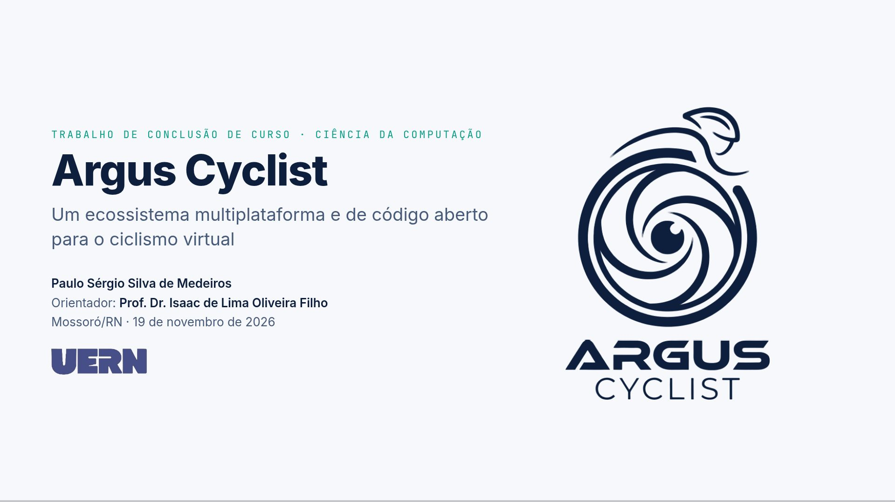
O que aparece na tela
Rótulo no alto: “Trabalho de Conclusão de Curso ·
Ciência da Computação”.
Título: “Argus Cyclist”, com o subtítulo “Um
ecossistema multiplataforma e de código aberto para o ciclismo
virtual”.
Identificação: seu nome, o orientador
(Prof. Dr. Isaac de Lima Oliveira Filho), Mossoró/RN e a data.
Logos: o da UERN e, à direita, o do Argus Cyclist
em cor sólida (no tema escuro, ele fica claro).
Conceitos
Ecossistema: não é um aplicativo único. São o app
desktop (Windows e Linux), o app Android e os arquivos abertos (GPX,
FIT, ZWO) que conversam com outras plataformas.
Multiplataforma: roda no desktop e no Android com a
mesma interface.
Código aberto: o código está público no GitHub sob
a licença GPLv3.
Roteiro da fala (20 s)
“Bom dia. Eu sou o Paulo Sérgio, e apresento o Argus Cyclist, um
software de código aberto para ciclismo virtual, registrado no INPI,
orientado pelo professor Isaac.”
No TCC
Capa e resumo.
Slide 2 · Sumário
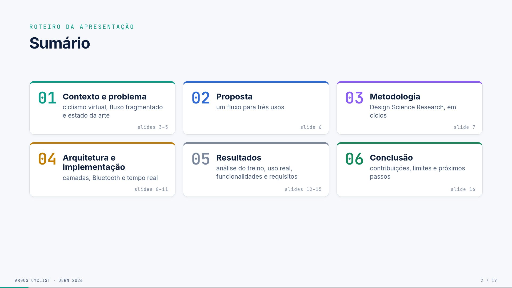
O que aparece na tela
Rótulo “Roteiro da apresentação” e título “Sumário”. Seis cartões,
que entram em sequência quando o slide abre (sem cliques), cada um com
um número grande colorido, o nome da seção, uma linha de descrição e o
intervalo de slides:
#
Seção
Descrição
Slides
01
Contexto e problema
ciclismo virtual, fluxo fragmentado e estado da arte
3–5
02
Proposta
um fluxo para três usos
6
03
Metodologia
Design Science Research, em ciclos
7
04
Arquitetura e implementação
camadas, Bluetooth e tempo real
8–11
05
Resultados
análise do treino, uso real, funcionalidades e requisitos
12–15
06
Conclusão
contribuições, limites e próximos passos
16
As referências (17 e 18) e o agradecimento (19) ficam fora do
sumário, como é usual.
Para que serve
Dá à banca o mapa da fala antes de começar. O rótulo no alto de cada
slide (Contexto, Problema, Metodologia…) repete a seção, para que a
banca sempre saiba em que parte você está.
Roteiro da fala (20 s)
“Vou falar do contexto e do problema, da proposta, do método, de como
o Argus foi construído, dos resultados e concluir.”
Não leia os cartões. Uma frase basta.
Slide 3 · O que é ciclismo
virtual
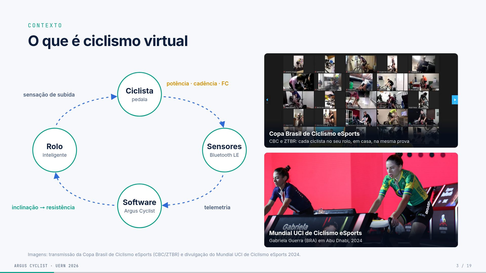
O que aparece na tela
À esquerda, um ciclo com quatro círculos ligados por
setas tracejadas que se movem:
Ciclista (pedala) → Sensores
(Bluetooth LE). Acima da seta: potência · cadência · FC.
Sensores → Software (Argus
Cyclist). Ao lado: telemetria.
Software → Rolo inteligente. Ao
lado: inclinação → resistência.
Rolo → Ciclista. Ao lado:
sensação de subida.
À direita, duas fotos (clicar amplia):
Copa Brasil de Ciclismo eSports (CBC e ZTBR): uma
videochamada com dezenas de ciclistas, cada um no seu rolo, em casa, na
mesma prova. Você aparece nessa chamada.
Mundial UCI de Ciclismo eSports, Abu Dhabi, 2024:
Gabriela Guerra (BRA) competindo.
Conceitos
Rolo inteligente (smart trainer): aparelho onde se
prende a bicicleta. Ele mede a potência e muda a resistência sozinho,
recebendo comandos do software.
Sensores: o próprio rolo, um medidor de potência e
a cinta cardíaca mandam dados pelo Bluetooth.
As quatro grandezas e suas cores (que se mantêm até
o fim do deck):
potência (W), amarelo: o trabalho que o ciclista
produz, a grandeza central do treino;
frequência cardíaca (bpm), vermelho: a resposta do
corpo;
cadência (rpm), azul: o ritmo das pedaladas;
inclinação (%), do mapa do percurso: faz o rolo
endurecer na subida.
Ciclismo eSports: competição oficial em rolo. A
UCI, federação internacional, organiza o Mundial; no Brasil há a Copa
Brasil da CBC.
Roteiro da fala (1:20)
“Ciclismo virtual é pedalar a sua bicicleta num rolo inteligente
enquanto um software simula o percurso. O ciclo é este: eu pedalo, os
sensores mandam potência, cadência e frequência cardíaca por Bluetooth,
o software calcula onde eu estou no mapa e manda a inclinação de volta
para o rolo, que endurece na subida. Então eu sinto a
subida.
Guardem estas cores, que vão até o fim: potência em amarelo,
frequência cardíaca em vermelho.
E isso já é esporte de verdade. Aqui é a Copa Brasil de Ciclismo
eSports, da CBC com a ZTBR: cada atleta pedala em casa e a organização
acompanha pela videochamada (eu estou nessa chamada). E aqui é o Mundial
da UCI, em Abu Dhabi, em 2024, com a brasileira Gabriela Guerra.”
Perguntas prováveis
(EF) O rolo mede a potência ou estima? O rolo
inteligente mede a potência no próprio equipamento. A velocidade
virtual, por outro lado, é calculada pelo modelo físico (slide 12 e
glossário).
(Comp.) Por que Bluetooth e não ANT+? O notebook e
o celular têm Bluetooth nativo, enquanto ANT+ precisaria de um dongle
USB. O Argus usa o protocolo FE-C (que nasceu no ANT+) transportado por
Bluetooth (slide 10).
No TCC
Cap. 1 (Introdução) e Cap. 2 (Estado da arte, “De simuladores a
ecossistemas”).
Slide 4 · O fluxo do
ciclista é fragmentado
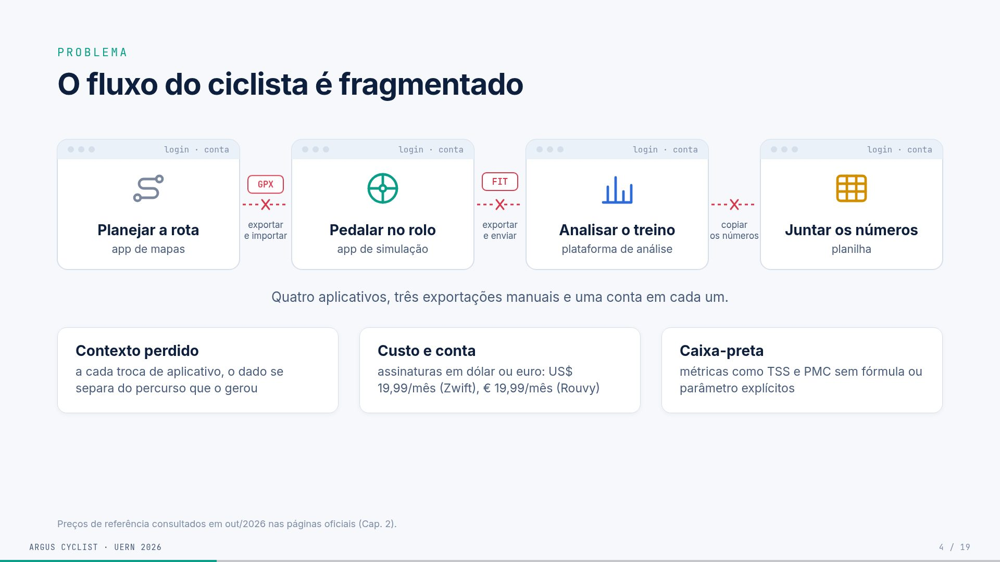
O que aparece na tela
Quatro janelas de aplicativo, que entram em
sequência, cada uma com “login · conta” no topo:
Planejar a rota (app de mapas);
Pedalar no rolo (app de simulação);
Analisar o treino (plataforma de análise);
Juntar os números (planilha).
Entre as janelas, elos vermelhos quebrados com um
“X”. Arquivos “caem” no caminho: GPX (exportar e
importar), FIT (exportar e enviar) e
CSV (copiar os números).
Frase: “Quatro aplicativos, três exportações
manuais e uma conta em cada um.”
Três cartões, um por clique:
Contexto perdido: a cada troca de aplicativo, o
dado se separa do percurso que o gerou.
Custo e conta: assinaturas em dólar ou euro, como
US$ 19,99/mês (Zwift) e € 19,99/mês (Rouvy).
Caixa-preta: métricas como TSS e PMC aparecem sem
fórmula ou parâmetro explícitos.
Rodapé: os preços foram consultados em out/2026 nas
páginas oficiais (Cap. 2).
Conceitos
GPX: arquivo com o percurso (latitude, longitude,
altitude). É o que se baixa de um app de mapas.
FIT: arquivo binário com o registro do treino
(potência, FC, cadência segundo a segundo). É o padrão da Garmin e o
formato que Strava e Intervals.icu aceitam.
CSV: planilha em texto.
TSS e PMC: métricas de carga de treino (slides 12 e
13). Em muitos apps elas aparecem sem a fórmula.
Roteiro da fala (1:00)
“Hoje, quem treina em casa usa quatro ferramentas: uma para montar a
rota, outra para pedalar no rolo, outra para analisar e uma planilha
para juntar tudo. Entre elas, o dado viaja em arquivos exportados à mão,
e cada uma pede conta e login.
Isso gera três dores. O contexto se perde: o número de potência se
separa da subida que o gerou. O custo se acumula, com assinaturas em
dólar e euro. E a análise é uma caixa-preta: o app mostra um TSS, mas
não diz como calculou.
O Argus ataca a fragmentação e a caixa-preta, mantendo o dado no seu
computador.”
Perguntas prováveis
(Comp.) Por que não usar o Strava para tudo? O
Strava analisa, mas não controla o rolo nem simula percurso. Além disso,
os dados ficam na nuvem dele.
De onde vêm os preços? Das páginas oficiais,
consultadas em out/2026. As referências são zwift_pricing e
rouvy_pricing no TCC.
No TCC
Cap. 1 (problema e justificativa) e Cap. 2 (“A lacuna do fluxo
integrado”).
Slide 5 · As peças
existem, mas não juntas
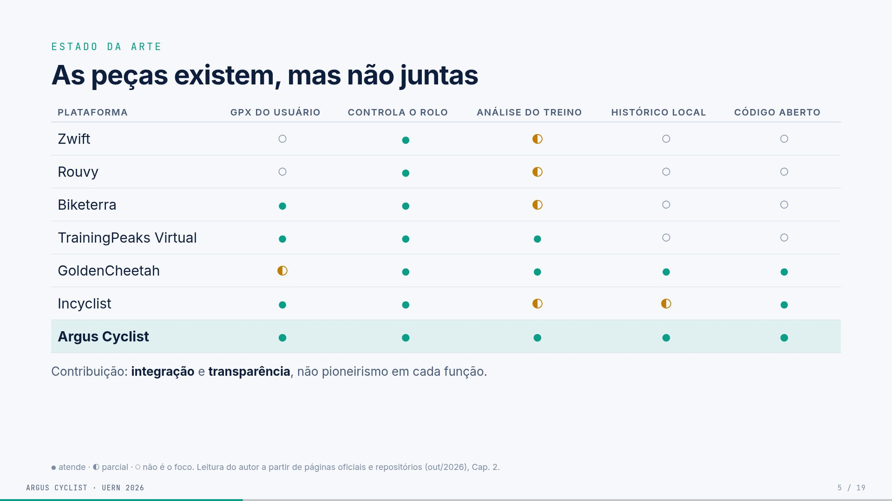
O que aparece na tela
Uma matriz de capacidades. As linhas são as plataformas e as colunas,
cinco capacidades:
Plataforma
GPX do usuário
Controla o rolo
Análise do treino
Histórico local
Código aberto
Zwift
○
●
◐
○
○
Rouvy
○
●
◐
○
○
Biketerra
●
●
◐
○
○
TrainingPeaks Virtual
●
●
●
○
○
GoldenCheetah
◐
●
●
●
●
Incyclist
●
●
◐
◐
●
Argus Cyclist (clique)
●
●
●
●
●
● atende · ◐ parcial · ○ não é o foco. A leitura é do autor, a partir
de páginas oficiais e repositórios (out/2026).
No clique seguinte aparece a frase: “Contribuição:
integração e transparência, não
pioneirismo em cada função.”
Conceitos
GPX do usuário: poder pedalar um percurso que
você escolheu, e não só os mundos prontos do app.
Histórico local: os treinos ficam no seu
computador, não só na nuvem da empresa.
TrainingPeaks Virtual: o concorrente comercial mais
parecido. Ele aceita GPX (recurso “GPXplore”) e tem análise, mas é
fechado e na nuvem.
GoldenCheetah: software livre de análise. É muito
forte em análise, mas não é um simulador de percurso.
Incyclist: o mais próximo em código aberto. Simula
vídeo e GPX, mas a análise é parcial.
Roteiro da fala (1:10)
“As peças já existem separadas. Zwift e Rouvy controlam o rolo, mas
são mundos fechados. O TrainingPeaks Virtual prova que o caso de uso
existe, porque já deixa pedalar o seu GPX, mas é fechado. O
GoldenCheetah é aberto e analisa muito bem, mas não simula o percurso. O
Incyclist é o mais próximo em código aberto.
O Argus não é pioneiro em nenhuma função isolada. A contribuição é
juntar as cinco num só artefato aberto, com as fórmulas expostas.”
Perguntas prováveis
(Comp.) Quem preencheu a matriz? Não é tendencioso?
É a leitura do autor a partir de documentação oficial, e está declarada
no rodapé. Não reivindico superioridade, só a combinação.
(Comp.) Por que não contribuir com o Incyclist em vez de
criar outro? O Incyclist tem outra arquitetura (Electron/Node)
e foco em vídeo. A proposta aqui era um núcleo em Go com análise de
treino e dado local como eixo central. Contribuir lá fica como
possibilidade futura.
No TCC
Cap. 2: “Síntese comparativa”, “Iniciativas de código aberto” e
“Quatro eixos de diferenciação”.
Slide 6 · Um fluxo para três
usos
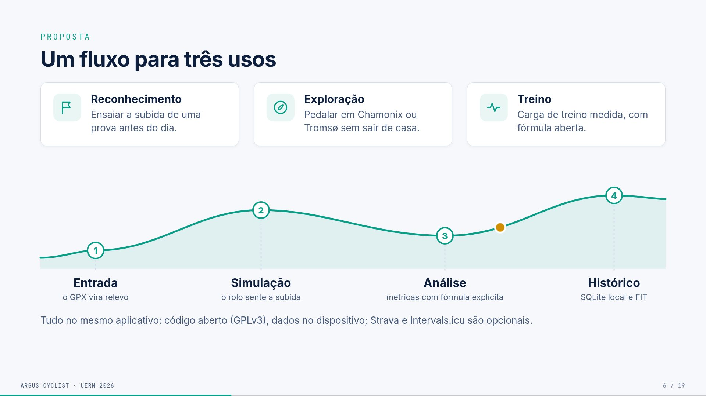
O que aparece na tela
Três cartões com ícone:
Reconhecimento: ensaiar a subida de uma prova antes
do dia.
Exploração: pedalar em Chamonix ou Tromsø sem sair
de casa.
Treino: carga de treino medida, com fórmula
aberta.
Um perfil de subida que se desenha, com um ponto
amarelo (o ciclista) andando sobre ele. A cada clique entra uma estação:
Entrada: o GPX vira relevo;
Simulação: o rolo sente a subida;
Análise: métricas com fórmula explícita;
Histórico: SQLite local e FIT.
Último clique: “Tudo no mesmo aplicativo: código
aberto (GPLv3), dados no dispositivo; Strava e Intervals.icu são
opcionais.”
Conceitos
Reconhecimento de percurso: pedalar antes a rota de
uma prova real para conhecer as subidas e planejar o esforço.
SQLite: um banco de dados que é um arquivo local,
sem servidor.
GPLv3: licença de software livre. Quem distribuir
versões modificadas precisa manter o código aberto.
Strava e Intervals.icu: plataformas on-line para
onde o Argus pode enviar o FIT. É opcional.
De onde vêm os números
Chamonix e Tromsø estão no seu histórico real
(chamonix-32km.gpx, 4 sessões; Tromsø.gpx, 2
sessões).
Roteiro da fala (50 s)
“A proposta atende três usos com o mesmo fluxo: reconhecer o percurso
de uma prova, explorar lugares que talvez eu nunca visite (Chamonix e
Tromsø estão no meu histórico) e treinar com carga medida. O fluxo tem
quatro etapas: o GPX entra e vira relevo, o rolo simula a subida, as
métricas são calculadas com fórmula aberta e tudo fica guardado
localmente, em SQLite e FIT. Tudo no mesmo aplicativo.”
No TCC
Cap. 1 (objetivos) e Cap. 4 (“Demonstração”, os três cenários).
Slide 7 ·
Construir, usar e corrigir, em ciclos
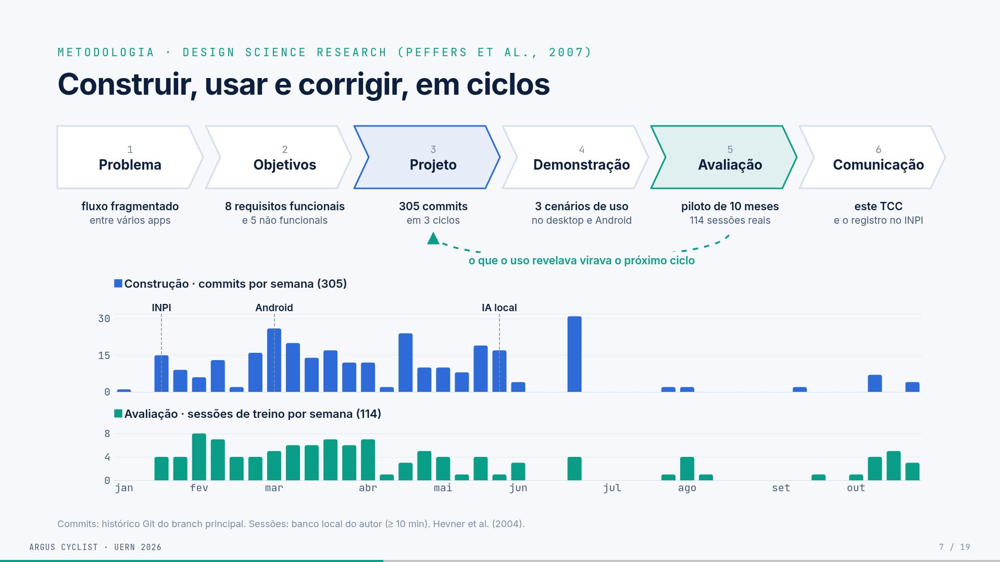
O que aparece na tela
Seis setas em sequência: as etapas da DSR de
Peffers et al. (2007), cada uma com o que corresponde no
projeto.
#
Etapa
No Argus
1
Problema
fluxo fragmentado entre vários apps
2
Objetivos
8 requisitos funcionais e 5 não funcionais
3
Projeto (azul)
305 commits em 3 ciclos
4
Demonstração
3 cenários de uso no desktop e no Android
5
Avaliação (verde)
piloto de 10 meses, 114 sessões reais
6
Comunicação
este TCC e o registro no INPI
Clique 1: uma seta tracejada volta da Avaliação
para o Projeto, com a frase “o que o uso revelava virava o próximo
ciclo”.
Clique 2: um gráfico em dois painéis com o mesmo
eixo de tempo (jan a out/2026):
em cima, Construção: commits por semana (azul),
total 305, com marcos verticais em INPI (20/01),
Android (08/03) e IA local
(27/05);
embaixo, Avaliação: sessões de treino por semana
(verde), total 114.
Conceitos
DSR (Design Science Research): método de pesquisa
em que o conhecimento vem de construir e avaliar um
artefato (aqui, o software). A versão de Peffers tem seis
etapas. Hevner et al. (2004) dão a base teórica.
Artefato: o produto da pesquisa, o Argus
Cyclist.
Ciclo iterativo: construir, usar, achar problemas e
corrigir, várias vezes.
Os três ciclos do TCC são temáticos e se sobrepõem
no tempo:
núcleo e linha de base, até o registro no INPI
(20/01);
análise, treino e integrações: ZWO, testes de FTP,
eventos, PMC, Strava e Intervals;
mobilidade e experiência: Android, MapLibre, IA
local e desgaste de componentes.
Commit: cada alteração registrada no Git.
De onde vêm os números
305 commits:git log do branch
main até 31/10/2026.
114 sessões: atividades com 10 min ou mais no banco
local (são 140 no total).
Os dois saem do script scripts/exportar_dados.py.
INPI: processo BR512026003786-7, de
20/01/2026.
Atenção: o TCC diz 301 commits,
porque o levantamento foi feito em 18/10. O deck usa 305, o número
atualizado. Se perguntarem, explique a diferença de data.
Roteiro da fala (1:00)
“O método é a Design Science Research: o conhecimento vem de
construir e avaliar o artefato. São seis etapas, e cada uma tem um
correspondente no projeto. O que importa é o laço entre projeto e
avaliação: eu usava o Argus nos meus treinos, e o que dava errado virava
correção no ciclo seguinte.
O gráfico mostra isso com dados reais. Em azul, a construção, em
commits por semana; em verde, a avaliação, em sessões de treino por
semana. As duas andam juntas de fevereiro a maio, e a avaliação continua
depois. Os marcos são o registro no INPI em janeiro, o Android em março
e a IA local em maio.”
Perguntas prováveis
(Comp.) Avaliação com um único usuário (n = 1) é suficiente
para DSR? Para um estudo piloto, sim. A DSR admite avaliação
por demonstração e uso, e o TCC declara que não há inferência
estatística nem estudo de usabilidade com terceiros (é trabalho
futuro).
(Comp.) Por que os commits caem depois de junho? O
núcleo estabilizou e o trabalho passou a ser de uso e escrita. A
avaliação (verde) continua até outubro.
(Comp.) Commits medem qualidade? Não. O TCC diz
explicitamente que o histórico é evidência de continuidade e
rastreabilidade, não de qualidade.
No TCC
Cap. 4: “Design Science Research”, “Processo de desenvolvimento” (os
três ciclos) e “Avaliação”.
Slide 8 · Como o Argus foi
construído
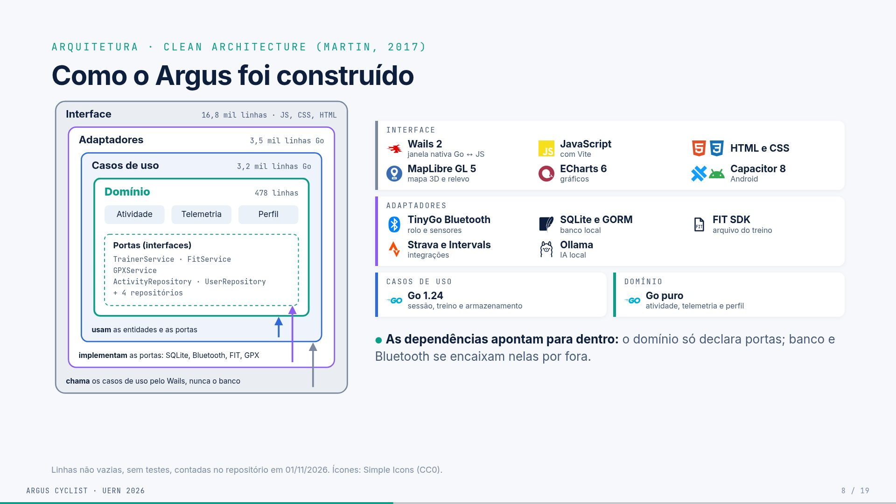
O que aparece na tela
À esquerda, quatro retângulos um dentro do outro (as
camadas da Clean Architecture), cada um com o nome e o tamanho em linhas
de código:
Interface: 16,8 mil linhas (JS, CSS e HTML);
Adaptadores: 3,5 mil linhas de Go;
Casos de uso: 3,2 mil linhas de Go;
Domínio: 478 linhas. Dentro dele estão as entidades
Atividade, Telemetria e Perfil e uma caixa tracejada
“Portas (interfaces)” com TrainerService,
FitService, GPXService,
ActivityRepository, UserRepository e mais 4
repositórios.
No clique, três setas verticais coloridas, cada uma
com um verbo:
Casos de uso usam as entidades e as portas;
Adaptadores implementam as portas: SQLite,
Bluetooth, FIT, GPX (a seta termina dentro da caixa de portas);
Interface chama os casos de uso pelo Wails, nunca o
banco.
À direita, as tecnologias com ícones, agrupadas pela
cor da camada:
Interface: Wails 2, JavaScript (com Vite), HTML e
CSS, MapLibre GL 5, ECharts 6, Capacitor 8 (Android);
Adaptadores: TinyGo Bluetooth, SQLite e GORM, FIT
SDK, Strava e Intervals, Ollama;
Casos de uso: Go 1.24;
Domínio: Go puro.
Frase final: “As dependências apontam para dentro: o
domínio só declara portas; banco e Bluetooth se encaixam nelas por
fora.”
Conceitos
Clean Architecture (Martin, 2017): organizar o
código em camadas concêntricas. A regra é que o código de dentro
não conhece o de fora: o domínio (as regras do negócio) não
importa banco, Bluetooth nem interface.
Portas e adaptadores: o domínio declara
interfaces (as portas), por exemplo “um serviço de rolo deve
saber SetGrade”. Os adaptadores implementam essas
interfaces: o Bluetooth real, um rolo virtual de teste, o SQLite. Isso
permite trocar o rolo real por um simulado sem mudar as regras.
Inversão de dependência: quem está fora depende de
quem está dentro, nunca o contrário.
Tecnologias:
Go: linguagem do núcleo, compilada e rápida.
Wails: cria um app desktop com interface web e
núcleo em Go, ligando os dois (bindings).
Capacitor: empacota a mesma interface web como app
Android.
MapLibre GL: mapa 3D de código aberto (imagens Esri
e relevo AW3D30).
ECharts: gráficos.
TinyGo Bluetooth: biblioteca BLE para Go.
GORM: biblioteca que faz a ponte entre o Go e o
SQLite.
Ollama: roda modelos de IA localmente.
De onde vêm os números
Linhas não vazias, sem arquivos de teste, contadas no repositório em
01/11/2026:
domínio:internal/domain, 478;
casos de uso:internal/usecase (224) +
app.go, gamification.go e main.go
(3.017) = 3,2 mil;
interface: JS 8.135 + CSS 6.540 + HTML 2.081 = 16,8
mil.
Roteiro da fala (1:10)
“A arquitetura segue a Clean Architecture. No centro está o domínio,
pequeno, com 478 linhas de Go puro: atividade, telemetria, perfil e as
portas, que são as interfaces que o sistema precisa. Os
casos de uso usam essas portas. Os adaptadores, como Bluetooth, SQLite e
FIT, implementam as portas por fora. E a interface chama os casos de uso
pelo Wails, nunca o banco direto.
Na prática, posso trocar o rolo real por um rolo virtual de teste sem
mexer nas regras. À direita está a stack: Go no núcleo, Wails no
desktop, Capacitor no Android, MapLibre no mapa, ECharts nos gráficos,
SQLite para os dados e Ollama para a IA local.”
Perguntas prováveis
(Comp.) Por que Wails e não Electron ou Tauri? O
núcleo já era Go, com biblioteca BLE em Go. Electron embutiria Node e
Chromium; Tauri usaria Rust. O Wails liga o Go à interface com menos
distância. O TCC é honesto: não houve benchmark de memória nem
de tamanho. Foi adequação ao código existente.
(Comp.) Onde a Clean Architecture vaza? Há duas
concessões declaradas:
O app.go concentra a orquestração da sessão: dos 3,2
mil de casos de uso, 3 mil estão nele.
As entidades do domínio carregam tags do GORM
(gorm:"primaryKey"), mas sem importar o pacote.
(Comp.) Por que a física é reimplementada em JS no
Android? O Capacitor não executa Go. Portar o núcleo para
WebAssembly exigiria outra cadeia de compilação, fora do escopo. É a
decisão mais custosa (ADR-06) e um caminho para trabalho futuro.
(Comp.) Por que a interface tem tantas linhas?
Porque o HUD, o mapa, os gráficos, os modais e o CSS responsivo para o
celular estão nela. O CSS sozinho tem 6,5 mil linhas.
No TCC
Cap. 5: “Stack tecnológica”, “Clean Architecture e Ports
& Adapters” e “Decisões e compensações” (tabela de ADRs).
Slide 9 ·
Núcleo em Go, interface web compartilhada
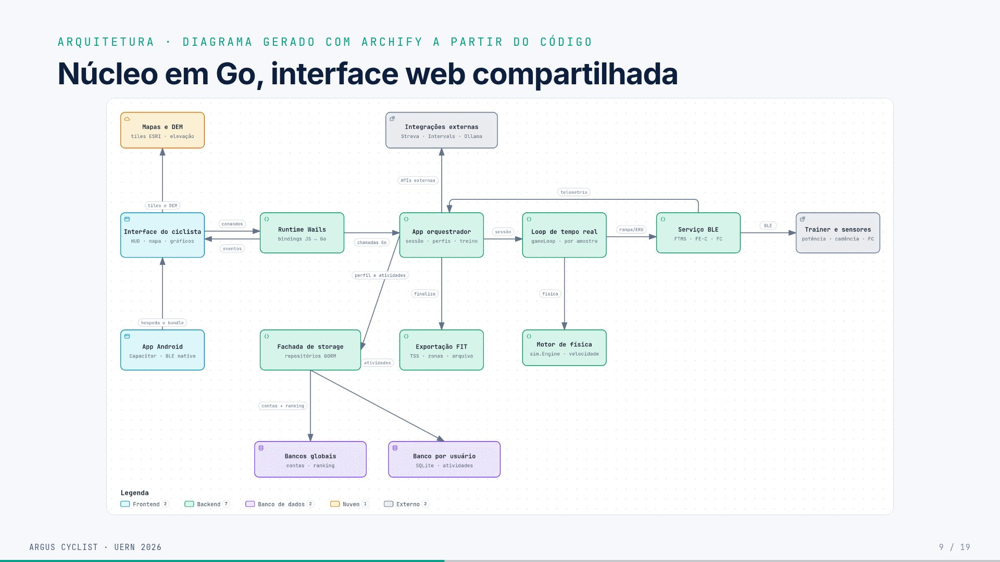
O que aparece na tela
O diagrama de arquitetura gerado pelo Archify a partir do
código, com 14 componentes. A legenda de cores é: Frontend
(azul-claro), Backend (verde), Banco de dados (roxo), Nuvem (laranja) e
Externo (cinza).
Siga o caminho principal da esquerda para a direita:
App orquestrador (sessão, perfis, treino): recebe
as chamadas Go.
Loop de tempo real (gameLoop, por amostra): a
sessão acontece aqui.
Serviço BLE (FTMS, FE-C, FC): manda rampa/ERG para
o Trainer e sensores e devolve a telemetria ao
orquestrador.
Ramificações:
o Loop chama o Motor de física
(sim.Engine, que calcula a velocidade);
o orquestrador finaliza na Exportação FIT (TSS,
zonas, arquivo);
o orquestrador usa a Fachada de storage
(repositórios GORM), que grava nos Bancos globais
(contas, ranking) e no Banco por usuário (SQLite,
atividades);
o orquestrador fala com as Integrações externas
(Strava, Intervals, Ollama);
a Interface busca Mapas e DEM (tiles ESRI,
elevação);
o App Android (Capacitor, BLE nativo) hospeda o
mesmo bundle da interface.
Conceitos
Archify: ferramenta que gera o diagrama a partir do
código. O desenho reflete o código real, não uma idealização.
Bindings: funções Go chamáveis do JavaScript,
criadas pelo Wails.
gameLoop: o laço da sessão que processa cada aviso
dos sensores.
DEM: modelo digital de elevação, a altitude do
terreno para o mapa 3D.
Bundle: o pacote da interface web (HTML, JS, CSS)
que o Android reaproveita.
Roteiro da fala (1:40)
“Este é o diagrama gerado pelo Archify a partir do código. Da
esquerda para a direita: a interface, o runtime Wails ligando o
JavaScript ao Go, o app orquestrador, o laço de tempo real e o serviço
Bluetooth, que fala com o rolo. O laço usa o motor de física para
calcular a velocidade. No fim da sessão, o orquestrador exporta o FIT e
grava no banco do usuário. O Android reaproveita a mesma interface, mas
a física e o GPX foram reescritos em JavaScript, porque o Capacitor não
roda Go.”
Perguntas prováveis
(Comp.) Os bancos são separados por quê? O banco
por usuário (um SQLite por perfil) isola os dados de cada ciclista. O
banco global guarda as contas e o ranking dos eventos.
(Comp.) O app orquestrador não é um “god object”?
Em parte, sim. É a concessão declarada (ADR-08, monólito modular).
No TCC
Cap. 5: “Topologia de componentes” e “Arquitetura móvel”.
Slide 10 · Como o
Argus conversa com o rolo
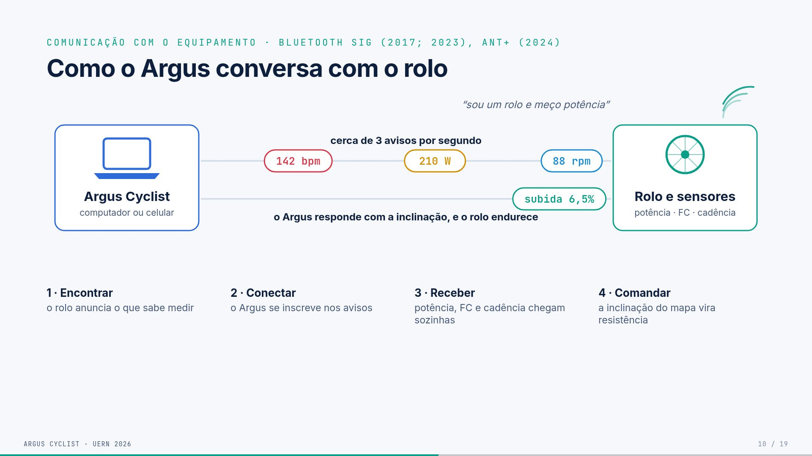
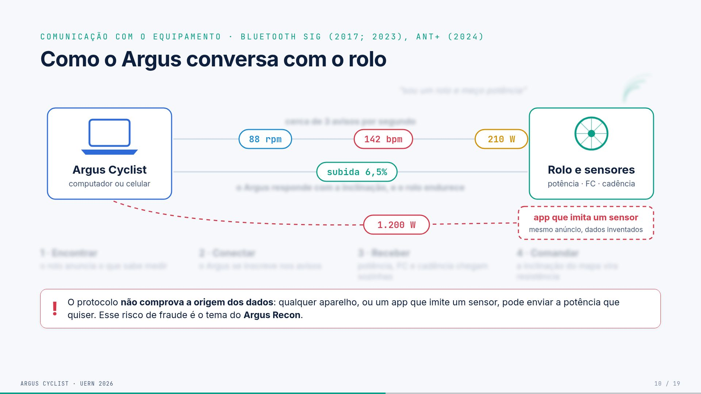
O que aparece na tela
À esquerda, o Argus Cyclist (computador ou
celular). À direita, o rolo e os sensores (potência,
FC, cadência).
Quatro cliques constroem a conversa; os passos aparecem também numa
faixa embaixo:
Encontrar: ondas saem do rolo com “sou um rolo e
meço potência” (o rolo anuncia o que sabe medir).
Conectar: aparecem duas linhas entre os dois (o
Argus se conecta e se inscreve nos avisos).
Receber: bolhas “210 W”, “142 bpm” e “88 rpm”
correm do rolo para o Argus, com a legenda “cerca de 3 avisos por
segundo”.
Comandar: uma bolha “subida 6,5%” vai do Argus para
o rolo (“o Argus responde com a inclinação, e o rolo endurece”).
Clique 5, o impostor: surge um “app que imita um
sensor” (mesmo anúncio, dados inventados) mandando “1.200 W” para o
Argus. Todo o resto fica desfocado (veja as duas
imagens acima). O alerta diz: “O protocolo não comprova a origem
dos dados: qualquer aparelho, ou um app que imite um sensor,
pode enviar a potência que quiser. Esse risco de fraude é o tema do
Argus Recon.”
Conceitos
Bluetooth LE (Low Energy): a versão de baixo
consumo do Bluetooth, usada por sensores esportivos.
GATT: a forma como o BLE organiza os dados, em
serviços com características.
Exemplo: o serviço Cycling Power (0x1818) tem a
característica de medição (0x2A63), que carrega potência e
cadência.
Outros serviços usados: Heart Rate (0x180D) e Fitness
Machine (0x1826).
Central e periférico: o rolo é o periférico
(servidor GATT, anuncia e guarda os dados). O Argus é a central
(cliente, conecta e pede).
Anúncio (advertising): o rolo transmite
periodicamente “existo e ofereço este serviço”.
Assinatura ou notificação: o Argus pede para ser
avisado quando o valor muda. A partir daí os dados chegam sozinhos, sem
precisar perguntar. Tecnicamente, é escrever no descritor CCCD.
Escrita no ponto de controle: é como o Argus manda
comandos ao rolo (inclinação ou potência-alvo).
FTMS × FE-C, os dois “idiomas” de controle:
FTMS é o padrão do Bluetooth. “Subida de 6,5%” vira
3 bytes: o comando 0x03 e o valor 65 (em décimos de por
cento).
FE-C é o padrão ANT+, aqui levado ao Bluetooth. A
mensagem é uma página de 8 bytes (página 51, inclinação em centésimos
com deslocamento de 200%). Antes de começar, o Argus envia o perfil do
ciclista (página 55) e o vento (página 50).
No desktop, o Argus fala os dois; no Android, só FE-C.
Spoofing (falsificação): um dispositivo se passa
por outro. Os perfis de ciclismo do BLE não autenticam a origem do
dado.
Argus Recon: o seu outro projeto, uma ferramenta de
segurança para analisar o BLE de dispositivos de ciclismo
(github.com/SoNdA11/argus-recon).
De onde vêm os números
“≈ 3 avisos por segundo”: medido nas sessões reais.
A Girona teve 10.870 notificações em 3.678 s ativos, ou 2,96 por
segundo.
210 W, 142 bpm, 88 rpm e 6,5%: são exemplos
ilustrativos.
Roteiro da fala (1:30)
“Como o Argus conversa com o rolo? Primeiro, o rolo se anuncia: ‘sou
um rolo e meço potência’. O Argus conecta e se inscreve para receber
avisos. A partir daí os dados chegam sozinhos, cerca de três por segundo
somando os sensores. No sentido contrário, o Argus envia a inclinação do
mapa, e o rolo endurece.
Existe um detalhe importante: nada no protocolo prova que esses 210
watts vieram de um medidor de verdade. Um aplicativo pode se passar por
sensor e mandar 1.200 watts. Em competições virtuais isso abre espaço
para fraude, e é o tema do Argus Recon, um outro projeto meu.”
Perguntas prováveis
(Comp.) O Argus detecta o spoofing? Não. O Argus
não autentica; ele confia no sensor, como todos os apps do mercado. A
análise de fraude é o objeto do Argus Recon. Só citar, não
aprofundar.
(Comp.) FTMS foi testado? O rolo usado nos testes
fala FE-C. O caminho FTMS está implementado no desktop, mas não
foi validado com um rolo que só tenha FTMS (Cap. 7). Há ainda
um defeito conhecido, descrito no Cap. 6: o opcode 0x00
também é enviado à característica 0x2A66.
(Comp.) Por que só FE-C no Android? Foi uma decisão
de escopo: o plugin Capacitor foi implementado para o caminho do
hardware de teste. Implementar FTMS no Android é trabalho futuro.
(Comp.) Notificações podem se perder? Sim. Se o
laço estiver ocupado, uma notificação pode ser descartada, porque o
canal não tem buffer. Está registrado como limitação de amostragem.
No TCC
Cap. 3 (“Bluetooth Low Energy e o modelo GATT”, “FTMS”, “FE-C sobre
BLE”) e Cap. 6 (“Integração com o rolo”).
Slide 11 · Do sensor até o
ciclista
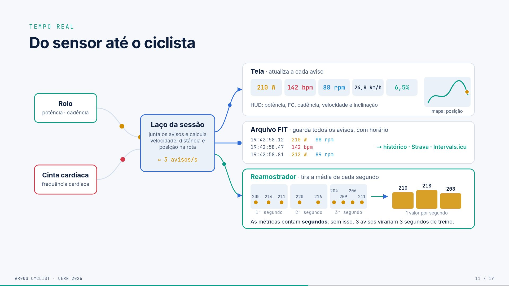
O que aparece na tela
À esquerda, o Rolo (potência,
cadência) e a Cinta cardíaca (FC) mandam pacotes
animados (bolinhas) para o Laço da sessão. O laço junta
os avisos e calcula a velocidade, a distância e a posição na rota (≈ 3
avisos/s).
Três saídas, uma por clique:
Tela (atualiza a cada aviso): um mini HUD com 210
W, 142 bpm, 88 rpm, 24,8 km/h e 6,5%, e um mini mapa com o ciclista
andando. Legenda: “HUD: potência, FC, cadência, velocidade e inclinação;
mapa: posição”.
Arquivo FIT (guarda todos os avisos, com horário):
três linhas de registro com horários de frações de segundo, que seguem
para o histórico, o Strava e o Intervals.icu.
Reamostrador (tira a média de cada segundo): pontos
caem em três caixas, “1º, 2º e 3º segundo”:
1º segundo: 205, 214, 211 → 210;
2º segundo: 220, 216 → 218;
3º segundo: 204, 209, 206, 211 → 208.
Embaixo: “As métricas contam segundos: sem isso, 3
avisos virariam 3 segundos de treino.”
Conceitos
Laço da sessão (gameLoop): o código que recebe cada
aviso, atualiza a física e distribui os dados.
HUD: os números sobrepostos ao mapa durante o
treino.
Por que a tela recebe tudo: para ficar responsiva.
O mapa suaviza a câmera a cada 150 ms. A fluidez da tela não é a mesma
coisa que a taxa de aquisição.
Por que o FIT recebe tudo: é o registro bruto e
fiel, com o horário de cada aviso, e é o que vai para as plataformas
externas.
Reamostrador: os sensores mandam avisos em horários
irregulares, cerca de 3 por segundo. As fórmulas (NP com janela de 30 s,
TSS, desacoplamento, HRR) supõem um valor por segundo.
O reamostrador agrupa os avisos de cada segundo e tira a média.
O que acontecia sem ele: 3 avisos eram contados
como 3 segundos, e as métricas ficavam distorcidas. Na Girona, o NP
calculado era 138 W em vez de 106 W.
Lacunas: se passar mais de 5 s sem aviso, o
reamostrador trata o intervalo como pausa.
De onde vêm os números
Valores do reamostrador: são um exemplo, mas a
conta das médias é exata. (205+214+211)/3 = 210; (220+216)/2 = 218;
(204+209+206+211)/4 = 207,5, arredondado para 208.
Código:internal/service/fit/resample.go
(SecondResampler), com 3 testes automatizados.
Roteiro da fala (1:15)
“Os sensores mandam avisos quando querem, cerca de três por segundo.
O laço da sessão junta tudo e calcula a velocidade pela física e a
posição na rota. Os dados vão para três lugares. A tela recebe cada
aviso: o HUD mostra os números e o mapa move o ciclista. O arquivo FIT
guarda tudo, com o horário de cada aviso, e é o que vai para o
histórico, o Strava e o Intervals.
E o reamostrador agrupa os avisos de cada segundo e tira a média,
porque as fórmulas supõem um valor por segundo. Sem ele, três avisos
virariam três segundos de treino. Esse defeito foi encontrado pela
própria avaliação e corrigido.”
Perguntas prováveis
(Comp.) Por que média e não o último valor? A média
usa toda a informação do segundo e suaviza o ruído. O último valor
descartaria amostras. Um segundo sem dados é tratado como pausa.
(Comp.) E os treinos antigos, calculados errado? O
banco guarda os valores antigos e não foi reescrito, por decisão do
autor. Os números do deck foram reprocessados a 1 Hz a partir dos FIT,
pelo script recalcular. O app corrigido já calcula certo
nas sessões novas.
(EF) A média de um segundo muda a potência? Não, de
forma relevante. A potência média da sessão é a mesma; o que muda é o
peso de cada segundo nas métricas.
No TCC
Cap. 5 (“Fluxo de telemetria”, ADR-04) e Cap. 3 (“Leitura, escalas e
taxas de amostragem”).
Slide 12 · Cada
número tem fórmula e limite
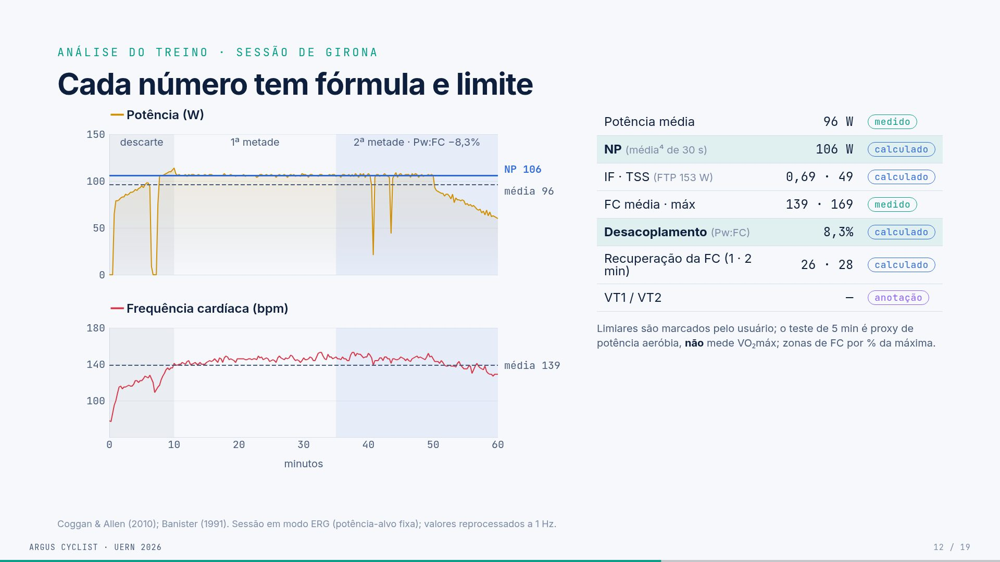
O que aparece na tela
À esquerda, um gráfico em dois painéis da sessão de
Girona (27/04/2026, 61 min, em modo ERG):
Potência (W), em amarelo:
a linha tracejada cinza é a “média 96”;
no clique, entra a linha azul “NP 106”;
no clique seguinte, entram as faixas: descarte (0 a
10 min, cinza), 1ª metade e 2ª metade · Pw:FC
−8,3% (azul-claro).
Frequência cardíaca (bpm), em vermelho: a linha
tracejada é a “média 139”.
À direita, uma tabela cujas linhas entram por
clique, cada uma com um selo (medido, calculado ou anotação):
Métrica
Valor
Natureza
Potência média
96 W
medido
NP (média⁴ de 30 s)
106 W
calculado
IF · TSS (FTP 153 W)
0,69 · 49
calculado
FC média · máx
139 · 169
medido
Desacoplamento (Pw:FC)
8,3%
calculado
Recuperação da FC (1 · 2 min)
26 · 28
calculado
VT1 / VT2
n/a
anotação
Nota abaixo: “Limiares são marcados pelo usuário; o teste de 5 min é
proxy de potência aeróbia, não mede VO₂máx; zonas de FC
por % da máxima.”
Rodapé: “Coggan & Allen (2010); Banister (1991). Sessão em modo
ERG (potência-alvo fixa); valores reprocessados a 1 Hz.”
Conceitos
(o slide mais importante para o professor de EF)
Carga externa × carga interna. Esta é a distinção
que organiza as métricas.
Carga externa é o trabalho mecânico, medido pela
potência: NP, IF, TSS e PMC.
Carga interna é a resposta do corpo, medida pela
FC: TRIMP, HRR e Pw:FC (o desacoplamento relaciona as duas).
Nenhuma métrica mede lactato nem VO₂. No texto do TCC o conjunto
aparece como “análise fisiológica”; no deck, “análise do treino”.
FTP (Functional Threshold Power). É a maior potência
que se sustenta por cerca de uma hora. O Argus estima o FTP por três
testes:
teste de rampa: melhor potência de 1 min × 0,75;
teste de 20 min: melhor potência de 20 min × 0,95;
teste de 5 min: melhor potência de 5 min × 0,80.
Na Girona, o FTP era 153 W (o atual é 181 W).
NP (Normalized Power). É a potência “equivalente” a
um esforço constante. Passo a passo:
média móvel de 30 s da potência;
elevar cada valor à 4ª potência;
tirar a média;
tirar a raiz quarta.
Picos pesam mais, por isso NP (106) > média (96). Na Girona havia
paradas e retomadas; essas variações sobem o NP.
IF (Intensity Factor). IF = NP / FTP = 106 / 153 =
0,69. Um IF perto de 0,7 é ritmo de endurance; perto de
1,0 é limiar.
TSS (Training Stress Score). TSS = (segundos × NP ×
IF) / (FTP × 3600) × 100. Na Girona: (3678 × 106 × 0,693) / (153 × 3600)
× 100 ≈ 49. Uma hora no FTP vale 100.
Desacoplamento aeróbio (Pw:FC). Mede se o coração
“se descola” da potência ao longo do treino:
descarta os primeiros 10 min (aquecimento);
divide o resto em duas metades;
calcula, em cada metade, a eficiência EF = potência média / FC
média;
Desacoplamento = (EF₁ − EF₂) / EF₁.
O valor foi 8,3%, acima do limiar convencional de
5%. Mas o número não diz a causa (fadiga, calor, hidratação) e é pouco
informativo em percurso variável. Exige pelo menos 1 hora de dados.
HRR (recuperação da FC). FC no fim do esforço menos
a FC 60 s e 120 s depois: 26 e 28 bpm. Limitação
declarada: usa a FC final, não o pico, e por isso pode subestimar.
TRIMP (Banister). Duração (min) × HRr × 0,64 ×
e^(1,92 × HRr), em que HRr é a fração da reserva de FC. Os coeficientes
0,64 e 1,92 são os da versão masculina, usados como base genérica.
VT1/VT2. São os limiares ventilatórios. O Argus
não detecta: o usuário marca as linhas no gráfico (são
uma anotação).
Zonas de FC. São calculadas por % da FC máxima: Z1
< 60%, Z2 de 60 a 70%, e assim por diante. É uma aproximação, não
Karvonen nem LTHR.
Selos. “Medido” vem do sensor; “calculado” vem de
fórmula; “anotação” é marcado pelo usuário. Essa é a honestidade
epistêmica do trabalho.
Modo ERG. O rolo segura uma potência-alvo fixa,
independentemente da inclinação. Por isso a linha de potência é tão
plana.
De onde vêm os números
Sessão:workouts/workout_2026-04-27_19-42-58.fit, reprocessada a 1
Hz pelo script TCC/registro-software/scripts/recalcular
(arquivo recalculo-metricas.csv).
Os outros valores (média, FC, HRR) vêm do mesmo
FIT.
Roteiro da fala (1:50)
“Este é o slide para o professor de Educação Física. A sessão é a de
Girona: 61 minutos em modo ERG. A potência média foi 96 watts, e o NP
foi 106. O NP é maior porque os picos pesam mais: é uma média de quarta
potência. Com o FTP de 153 da época, o IF foi 0,69 e o TSS, 49.
O desacoplamento compara as duas metades depois de descartar o
aquecimento: a razão entre potência e FC caiu 8,3%. Isso está acima do
limiar convencional de 5%, mas o número não diz a causa.
O mais importante é o que está à direita: cada número tem um selo,
medido, calculado ou anotação. E o que não medimos está
escrito: os limiares são marcados pelo usuário, o teste de 5 minutos não
mede VO₂máx e as zonas de FC são por percentual da máxima.”
Perguntas prováveis (EF)
O teste de 5 min mede VO₂máx? Não. É um proxy de
potência aeróbia máxima (MAP). O VO₂máx exige análise de gases.
Por que zonas por %FCmáx e não Karvonen ou LTHR? É
uma simplificação declarada. Karvonen e LTHR exigiriam FC de repouso
confiável ou teste de limiar. Fica como melhoria futura.
TRIMP com coeficiente masculino? Sim, como base
genérica, sem seleção de sexo nem individualização. Está declarado no
Cap. 3.
Se a potência era fixa (ERG), o desacoplamento
vale? É justamente o melhor cenário: com a potência quase
constante, a subida relativa da FC fica mais visível. Mesmo assim, o
número não diz a causa.
O simulador melhora o desempenho? Não foi avaliado;
não é objetivo do trabalho.
No TCC
Cap. 3 (“Análise do treino e carga”: FTP e zonas, NP/IF/TSS, TRIMP,
PMC, desacoplamento e HRR) e Cap. 6 (“Métricas e análise”).
Slide 13 · Dez meses de uso
real
O que aparece na tela
Quatro números grandes:
114 sessões de 10 min ou mais (de 140);
2.182 km de distância virtual;
92 h de tempo ativo;
282 FIT: 98 de treino + 184 de eventos.
O gráfico PMC (mar a out/2026):
barras cinza: TSS diário;
linha azul: CTL (42 dias);
linha vermelha: ATL (7 dias);
tracejado amarelo: TSB.
Rodapé: “PMC reconstruído com as constantes do sistema (42 e 7 dias)
a partir do banco local do autor.”
Conceitos
PMC (Performance Management Chart):
CTL (“fitness”): média exponencial do TSS diário
com constante de 42 dias. É o condicionamento acumulado.
ATL (“fadiga”): a mesma conta com 7 dias. É a carga
recente.
Como o Argus calcula, a cada dia: CTL ← CTL + (TSS − CTL)/42 e ATL ←
ATL + (TSS − ATL)/7.
Leitura do gráfico: há blocos de treino (mar a mai
e out), com a ATL subindo e a TSB negativa, e pausas (jun a set), com a
CTL caindo devagar.
De onde vêm os números
140 atividades no banco, das quais
114 têm 10 min ou mais. As 26 curtas são testes e
sessões interrompidas.
282 FIT = 98 em workouts/ + 184 em
workouts/events/. Cada tentativa de evento (sprint, KOM,
contrarrelógio) gera um FIT, mas não entra no histórico de treinos. Os
FIT de jan a mar não ficaram no disco.
2.182 km e 92 h: soma das 114 sessões.
Atenção: o TCC diz 274 FIT
(levantamento de 18/10). O deck usa 282, a contagem atualizada.
Roteiro da fala (1:00)
“Os números documentam uso continuado, não desempenho: 114 sessões,
2.182 quilômetros e 92 horas em dez meses. O PMC mostra blocos de
treino, de março a maio e em outubro, e pausas no meio do ano. A CTL é o
condicionamento de 42 dias, a ATL a fadiga de 7 dias, e a TSB a
diferença entre as duas.”
Perguntas prováveis
Por que 114 e 282 são diferentes? Contam coisas
diferentes: 114 são treinos de 10 min ou mais; 282 são arquivos FIT,
incluindo 184 tentativas do modo eventos.
(EF) A CTL ficou baixa (~20). Isso diz algo do
atleta? Diz só que o volume foi moderado e irregular. O
objetivo era avaliar o software, não o atleta.
No TCC
Cap. 3 (“PMC: CTL, ATL e TSB”) e Cap. 7 (“Estudo piloto”).
Slide 14 · Do treino à
análise
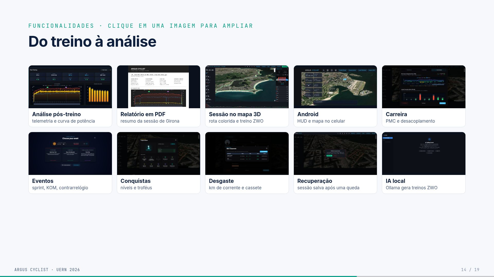
O que aparece na tela
Uma galeria 5 × 2. Clicar abre a imagem ampliada com
o fundo desfocado; ← → passam e Esc fecha.
Imagem
O que mostra
Análise pós-treino
telemetria completa e curva de potência de uma atividade
Relatório em PDF
resumo exportado da sessão de Girona
Sessão no mapa 3D
rota colorida por inclinação e treino ZWO
Android
HUD e mapa no celular
Carreira
PMC e desacoplamento ao longo do tempo
Eventos
sprint, KOM e contrarrelógio
Conquistas
níveis e troféus (gamificação)
Desgaste
km de corrente e cassete
Recuperação
sessão salva após uma queda do app
IA local
o Ollama gera treinos no formato ZWO
Conceitos
ZWO: o formato de treino estruturado (blocos de
aquecimento, intervalos e desaquecimento) criado pela Zwift.
KOM (King of the Mountain): prova de subida.
Recuperação de sessão: durante o treino, o Argus
grava um snapshot contínuo (metadados mais amostras em NDJSON).
Se o app fechar, ao reabrir ele oferece “Recover & Save”. É o RNF04,
e tem 12 testes.
IA local: o Ollama roda um modelo de linguagem no
próprio computador, sem enviar dados para fora. A IA só valida o
formato do treino, não a adequação fisiológica.
De onde vêm as imagens
O relatório PDF e a tela de recuperação foram capturados em
01/11/2026 de uma cópia do app e dos dados. Na cópia, a
Girona recebeu as métricas reprocessadas (NP 106), para o relatório
bater com o slide 12.
O print da IA é seu, recortado para tirar o seletor de modelo que
mostrava “error”.
Roteiro da fala (1:00)
“Estas são as telas reais. Ao abrir uma atividade do histórico, o
Argus mostra a telemetria e a curva de potência, e o resumo pode ser
exportado em PDF. Aqui está o Android, com a mesma interface. E há os
eventos, as conquistas, o desgaste de componentes, a recuperação de
sessão se o app cair e a IA local que gera treinos.”
Perguntas prováveis
(Comp.) A IA pode gerar um treino perigoso? A
validação é só sintática (o formato ZWO). Não há validação fisiológica,
e isso está declarado (ADR-07).
(EF) A IA usa o histórico do atleta? Em parte. O
prompt de sistema leva o perfil (FTP, peso) e um resumo das
últimas 10 atividades e dos totais
(internal/service/ai/prompts.go). Uma busca no histórico
completo (recuperação de informação, RAG) é trabalho futuro (Cap.
8).
No TCC
Cap. 6 (“Exportação FIT e recuperação”, “Assistente local”, “Modo
Android”) e Cap. 7 (“Avaliação funcional”).
Slide 15 · Requisitos
atendidos
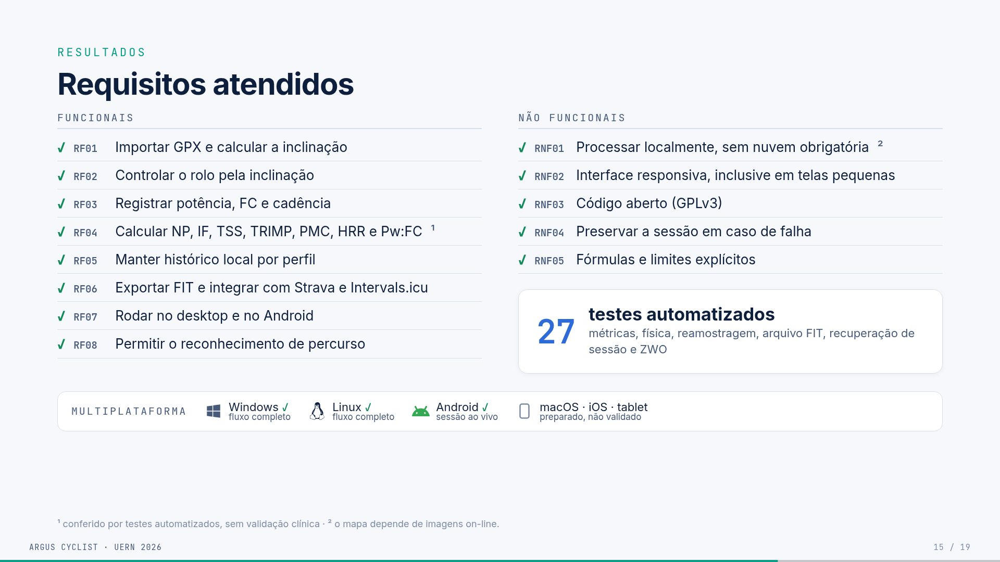
O que aparece na tela
Duas listas com ✓.
Funcionais:
RF01: importar GPX e calcular a inclinação;
RF02: controlar o rolo pela inclinação;
RF03: registrar potência, FC e cadência;
RF04: calcular NP, IF, TSS, TRIMP, PMC, HRR e Pw:FC¹;
RF05: manter histórico local por perfil;
RF06: exportar FIT e integrar com Strava e Intervals.icu;
RF07: rodar no desktop e no Android;
RF08: permitir o reconhecimento de percurso.
Não funcionais:
RNF01: processar localmente, sem nuvem obrigatória²;
RNF02: interface responsiva, inclusive em telas pequenas;
RNF03: código aberto (GPLv3);
RNF04: preservar a sessão em caso de falha;
RNF05: fórmulas e limites explícitos.
Cartão “27 testes automatizados”: métricas, física,
reamostragem, arquivo FIT, recuperação de sessão e ZWO.
Faixa “Multiplataforma”:
Windows ✓ e Linux ✓, fluxo completo;
Android ✓, sessão ao vivo;
macOS, iOS e tablet: preparado, não validado.
Notas de rodapé:
¹ conferido por testes automatizados, sem validação clínica;
² o mapa depende de imagens on-line.
Conceitos
Requisito funcional: o que o sistema
faz.
Requisito não funcional:como o sistema é
(local, aberto, responsivo, robusto).
Os 27 testes (go test ./...):
7 de métricas (NP, IF/TSS, zonas de potência, zonas de FC, TRIMP,
desacoplamento, PMC);
2 de física (equação de Martin);
3 do reamostrador;
2 de FIT (round-trip e tempo derivado dos registros);
12 de recuperação de sessão;
1 de ZWO.
O
detalhe de cada requisito (para a fala, se perguntarem)
RF01 a RF05: verificados no uso.
RF06: verificado em amostra (Strava e Intervals
aceitaram os FIT).
RF07: fluxo completo no Windows e Linux; sessão ao
vivo no Android.
RF08: demonstrado com o caso Geraardsbergen a
Leberg (Bélgica), o cenário de reconhecimento do Cap. 4.
Roteiro da fala (50 s)
“Todos os requisitos foram atendidos. As métricas são conferidas por
27 testes automatizados, mas sem validação clínica, porque não medimos
lactato nem VO₂máx. Tudo roda localmente; a exceção são as imagens do
mapa. E ‘multiplataforma’ aqui significa o que foi exercitado de fato:
Windows e Linux com o fluxo completo e o Android com a sessão ao vivo.
macOS e iOS estão preparados, mas não validados.”
Perguntas prováveis
(Comp.) Testes garantem que as métricas estão
corretas? Garantem que o código implementa a fórmula
documentada. Isso não equivale a validação clínica nem a comparação com
equipamento de laboratório.
(Comp.) Por que só 27 testes? O foco foram as
partes críticas (métricas, física, dados e recuperação). Cobrir a
interface e o BLE com hardware fica para trabalho futuro.
No TCC
Cap. 4 (“Problema, requisitos e escopo”) e Cap. 7 (“Avaliação
funcional”, “Avaliação de plataformas”).
Slide 16 · Conclusão
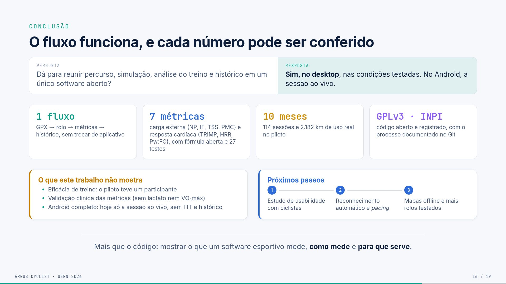
O que aparece na tela
Título: “O fluxo funciona, e cada número pode ser
conferido”.
Pergunta: “Dá para reunir percurso, simulação,
análise do treino e histórico em um único software aberto?”
Resposta: “Sim, no desktop, nas
condições testadas. No Android, a sessão ao vivo.”
Quatro provas:
1 fluxo: GPX → rolo → métricas → histórico, sem
trocar de aplicativo;
7 métricas: carga externa (NP, IF, TSS, PMC) e
resposta cardíaca (TRIMP, HRR, Pw:FC), com fórmula aberta e 27
testes;
10 meses: 114 sessões e 2.182 km de uso real no
piloto;
GPLv3 · INPI: código aberto e registrado, com o
processo documentado no Git.
O que este trabalho não mostra:
eficácia de treino (o piloto teve um participante);
validação clínica das métricas (sem lactato nem VO₂máx);
Android completo (hoje, só a sessão ao vivo, sem FIT e
histórico).
Próximos passos:
estudo de usabilidade com ciclistas;
reconhecimento automático e pacing;
mapas offline e mais rolos testados.
Frase final: “Mais que o código: mostrar o que um
software esportivo mede, como mede e para que
serve.”
Conceitos
Pacing: estratégia de distribuição do esforço ao
longo de uma prova (por exemplo, quanto empurrar em cada subida).
A ressalva “nas condições testadas”: a confirmação
é de engenharia (o fluxo funciona), não de eficácia de treino nem de
usabilidade por terceiros.
Roteiro da fala (1:15)
“Voltando à pergunta do início: dá para reunir percurso, simulação,
análise do treino e histórico num só software aberto? No desktop, sim,
nas condições testadas; no Android, a sessão ao vivo.
As provas são quatro: um fluxo sem trocar de aplicativo; sete
métricas com fórmula aberta e 27 testes; dez meses de uso real; e o
código aberto e registrado.
E o que este trabalho não mostra: eficácia de treino, porque foi um
participante; validação clínica; e o Android completo. Os próximos
passos são um estudo com ciclistas, o reconhecimento automático com
pacing e os mapas offline.
Para fechar: mais que o código, a contribuição é mostrar o que um
software esportivo mede, como mede e para que serve.”
Slide 17, obras e especificações (15): ANT+ FE-C,
Banister (1991), Bluetooth Core 5.4, Bluetooth FTMS, Coggan & Allen
(2010), GPLv3, Garmin FIT SDK, Hevner et al. (2004), o
certificado do INPI, Kleppmann et al. (2019, local-first),
Martin et al. (1998, modelo de potência), Martin (2017, Clean
Architecture), Peffers et al. (2007), GPX 1.1 e UCI.
Slide 18, software, serviços e repositórios (21):
em destaque, os seus dois repositórios, Argus
Cyclist (GPLv3) e Argus Recon. Depois, as tecnologias e
plataformas citadas: ECharts, Biketerra, Capacitor e o plugin BLE,
GoldenCheetah, GORM, muktihari/fit, Incyclist, Intervals.icu, MapLibre,
Ollama, Rouvy, Simple Icons, SQLite, Strava, TinyGo, TrainingPeaks
Virtual, Wails e Zwift.
Conceitos
Local-first (Kleppmann): princípio de que o dado
mora no dispositivo do usuário, e a nuvem é opcional.
Martin et al. (1998): o modelo físico que
relaciona potência, peso, inclinação, arrasto e velocidade. O Argus usa
esse modelo para calcular a velocidade virtual. As constantes são ρ =
1,225, CdA = 0,32, Crr = 0,005 e η = 0,96, e a equação é resolvida por
bisseção.
Roteiro
Não se fala nada; o slide passa em 5 s. Serve para a banca consultar
durante a arguição.
Slide 19 · Obrigado
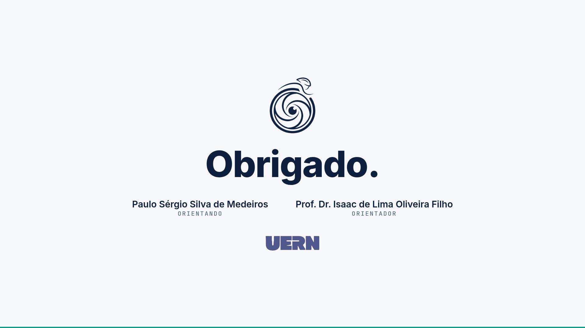
O que aparece na tela
O símbolo do Argus, “Obrigado.”, os nomes (Paulo Sérgio Silva de
Medeiros, orientando; Prof. Dr. Isaac de Lima Oliveira Filho,
orientador) e o logo da UERN.
Roteiro (15 s)
“Agradeço à banca, ao meu orientador e a todos. Fico à disposição
para as perguntas. Depois da arguição, posso mostrar o equipamento
funcionando.”
Deixe este slide na tela durante toda a arguição.
Glossário
ATL (Acute Training Load): “fadiga”; média
exponencial de 7 dias do TSS.
Bisseção: método numérico que acha a raiz de uma
equação dividindo um intervalo ao meio repetidamente. O Argus usa para
achar a velocidade que equilibra a potência na equação de Martin.
BLE (Bluetooth Low Energy): Bluetooth de baixo
consumo, usado por sensores esportivos.
Cadência: pedaladas por minuto (rpm).
Capacitor: ferramenta que transforma uma interface
web em app Android (e iOS).
Carga externa: o trabalho mecânico, medido pela
potência (NP, IF, TSS, PMC).
Carga interna: a resposta do corpo, medida pela FC
(TRIMP, HRR, Pw:FC).
CCCD: descritor BLE onde se escreve para ativar as
notificações.
Central / periférico: no BLE, quem conecta e pede
(central, o Argus) e quem anuncia e serve (periférico, o rolo).
Clean Architecture: organização em camadas em que as
dependências apontam para dentro, para o domínio.
CTL (Chronic Training Load): “condicionamento”;
média exponencial de 42 dias do TSS.
Desacoplamento (Pw:FC): queda da razão potência/FC
entre a 1ª e a 2ª metade do treino, depois de descartados os 10 min
iniciais.
DEM: modelo digital de elevação (altitude do
terreno).
DSR (Design Science Research): método de pesquisa
baseado em construir e avaliar um artefato.
ERG (modo): o rolo mantém uma potência-alvo
fixa.
FC: frequência cardíaca, em batimentos por minuto
(bpm).
FE-C: perfil ANT+ de controle de equipamentos de
fitness, usado pelo Argus sobre Bluetooth. As mensagens são páginas de 8
bytes.
FIT: formato binário de atividade da Garmin; o
padrão do mercado.
FTMS: serviço Bluetooth padrão para máquinas de
fitness. Os comandos são curtos, enviados ao ponto de controle
0x2AD9.
FTP (Functional Threshold Power): potência
sustentável por cerca de uma hora.
GATT: a estrutura de serviços e características do
BLE.
GORM: biblioteca Go que liga o código ao banco
SQLite.
GPX: formato de percurso (pontos com latitude,
longitude e altitude).
HRR (Heart Rate Recovery): queda da FC em 1 e 2
minutos após o esforço.
HUD: os números sobrepostos ao mapa durante o
treino.
IF (Intensity Factor): NP ÷ FTP.
MapLibre GL: biblioteca aberta de mapas 3D.
NP (Normalized Power): raiz quarta da média da 4ª
potência das médias móveis de 30 s.
Ollama: plataforma que roda modelos de IA
localmente.
PMC (Performance Management Chart): o gráfico de
CTL, ATL e TSB.
Portas e adaptadores: interfaces declaradas no
domínio (portas) e implementações concretas fora dele (adaptadores).
Reamostrador: componente que transforma os ~3 avisos
por segundo em 1 valor por segundo (a média), para as métricas.
SIM (modo): o rolo segue a inclinação do
percurso.
SQLite: banco de dados em arquivo local, sem
servidor.
TRIMP: impulso de treino de Banister, baseado em FC
e duração.
linhas: domínio / casos de uso / adaptadores / interface
contagem de 01/11
US$ 19,99 · € 19,99
mensalidade Zwift · Rouvy (out/2026)
páginas oficiais
Pontos delicados e
respostas honestas
1. “Só você testou? n = 1?” Sim. É um estudo piloto
com o próprio autor, sem grupo de controle nem instrumento de
usabilidade. A conclusão é de engenharia (o fluxo funciona), não de
eficácia. O estudo com ciclistas é o primeiro dos próximos passos.
2. “As métricas são validadas?” Não clinicamente. Os
testes conferem que o código implementa a fórmula documentada. Não
medimos lactato nem VO₂, e as métricas são as convenções do mercado
(Coggan, Banister).
3. “O FTMS funciona?” Está implementado no desktop,
mas o rolo dos testes fala FE-C. Não foi validado com um rolo só
FTMS. Há um defeito conhecido (o opcode 0x00
também vai para 0x2A66), descrito no Cap. 6. No Android, só
FE-C.
4. “O Android é equivalente?” Não. É a sessão ao
vivo (GPX, ZWO, BLE/FE-C, HUD). Não exporta FIT, não tem histórico e a
física foi reescrita em JS.
5. “O app mostra NP 138 na Girona, e o slide diz
106.” A avaliação encontrou um defeito: os sensores mandam ~3
avisos por segundo, e as métricas tratavam cada aviso como um segundo.
Foi corrigido com o reamostrador a 1 Hz. O banco guarda os valores
antigos por decisão do autor; os números do deck foram reprocessados a
partir dos FIT. Se for fazer a demo, saiba disso
antes.
6. “Na tela do app, VT2 aparece abaixo do VT1, e a curva de
potência mostra 373 W em 1 min.” Os VT são anotação manual do
usuário, e aquela marcação está errada. A curva de potência da tela de
análise (no frontend) ainda conta amostras como segundos e
mostra o valor antigo; o valor corrigido de 1 min é cerca de 148 W.
Evite abrir essa tela na demo, ou explique.
7. “Por que o TCC diz ‘análise fisiológica’ e o slide diz
‘análise do treino’?” Por precisão: NP, IF, TSS e PMC são carga
externa (potência); TRIMP, HRR e Pw:FC são carga interna (FC). No texto
o conjunto aparece como “análise fisiológica”; no deck, a divisão mais
exata.
8. “A Clean Architecture é respeitada?” Em grande
parte, com duas concessões declaradas: o app.go concentra a
orquestração (3 mil linhas), e as entidades do domínio carregam tags do
GORM sem importar o pacote.
9. “É 100% offline?” O dado e o processamento são
locais. As imagens do mapa vêm da internet, e mapas offline são trabalho
futuro.
10. “Os tokens do Strava são seguros?” Ficam em
texto simples no SQLite, sem criptografia nem keyring. Está
declarado no Cap. 5 como limitação.
11. “Latência e memória foram medidas?” Não. Houve
estimativas informais, e o TCC diz “não medido”. Não cite números.
Banco de perguntas extras
Computação
Por que Go? É compilado, leve, tem boa concorrência
(as goroutines para o laço e o BLE) e havia biblioteca BLE
(TinyGo).
Por que não WebAssembly para unificar o núcleo?
Exigiria outra cadeia de compilação e uma ponte com o BLE nativo, fora
do escopo. É o caminho mais coerente para o futuro.
Por que SQLite por perfil? Isola o dado de cada
ciclista e não precisa de servidor. O custo é não ter
sincronização.
Por que não um servidor? Traria contas, LGPD, custo
e disponibilidade. Para um TCC com foco local, o monólito modular basta
e é mais fácil de auditar.
O registro do INPI diz “HTML; JavaScript” e o núcleo é
Go? O registro foi da linha de base de janeiro, com a
declaração feita naquele momento. O núcleo em Go está documentado no
TCC. Se perguntarem, explique que é a descrição do formulário da
época.
Como o FIT foi validado? Strava e Intervals
aceitaram os arquivos. Também foi encontrado e corrigido um defeito em
que campos não preenchidos eram gravados como zero válido (altitude −500
m). Há testes de round-trip.
O que acontece se o app fechar no meio do treino? O
snapshot de recuperação guarda os metadados e as amostras. Ao reabrir, o
app oferece salvar (RNF04, 12 testes).
Por que o diagrama do slide 9 é do Archify? Porque
é gerado do código, então mostra a arquitetura real e não a ideal.
Educação Física
O que é FTP e por que os fatores 0,75, 0,95 e 0,80?
É a potência sustentável por cerca de uma hora. Os fatores convertem a
melhor potência de cada teste (rampa, 20 min, 5 min) numa estimativa do
FTP, seguindo as convenções da literatura de treino com potência (Coggan
& Allen).
VT1/VT2 são detectados? Não. São marcados pelo
usuário.
HRR usa o pico? Não. Usa a FC no fim do esforço, o
que pode subestimar a recuperação; está declarado.
Zonas por %FCmáx são adequadas? São uma aproximação
simples. Karvonen ou LTHR seriam melhores, e ficam como melhoria
futura.
TRIMP masculino em uma mulher? Os coeficientes são
genéricos (versão masculina), sem seleção de sexo. É uma limitação
declarada.
A velocidade virtual é real? Não. É estimada pelo
modelo de Martin a partir da potência medida, do peso e da inclinação. A
potência é medida; a velocidade, calculada.